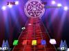
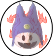
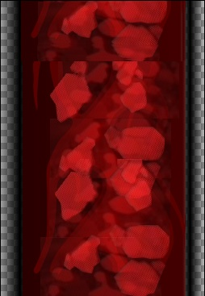
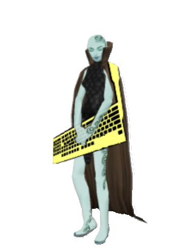
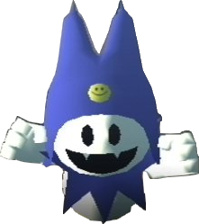
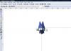

Vous connaissez peut-être le jeu "Frets On Fire" ; il s'agit d'un jeu gratuit proche du jeu "Guitar Hero" sur PS2. Je vais, à travers ce tuto, vous apprendre à créer des mods pour Frets On Fire.
Vous pourrez très facilement arriver à un résultat aussi bien que celui-ci (voire meilleur ;) ) :
Il s'agit de mon premier mod : "Megaten". Je me baserai sur celui-ci pour ce tuto.
Dans cette partie, je vais vous faire découvrir Frets On Fire (FoF).
Qu'est-ce que Frets On Fire ?
Frets On Fire est un jeu gratuit et Open Source pour PC qui a remporté l'"Assembly demo party 2006". Il fonctionne sur Windows (y compris Vista ^^ ), Linux et les Mac OS X (Mac Intel), même si la version de Frets On Fire pour Mac OS X est encore expérimentale et très instable sur les PPC. Le jeu est codé en Python et utilise la bibliothèque Amanith. C'est aussi un clone de la série "Guitar Hero" sur PS2, Xbox,...
Frets On Fire possède 2 musiques de base, mais on peut en ajouter une grande quantité. Il est d'ailleurs possible d'importer les chansons des jeux "Guitar Hero I" et "Guitar Hero II", mais aussi de créer ses propres chansons à partir de fichiers .ogg.
Téléchargement et installation
Pour télécharger la dernière version du jeu, rendez-vous sur le site officiel :
Tout d'abord, sachez que vous pouvez très bien vous aider d'un mod existant comme LightsGraphics ainsi que des fichiers de base du jeu. Vous trouverez des mods existants dans votre dossier mods, qui se situe normalement dans :
C:\Program Files\Frets on Fire\data\mods\
Les fichiers de base du jeu se situent, quant à eux, directement dans le dossier data. Pour commencer, créez le dossier de votre mod dans le dossier mods du jeu et donnez-lui un nom.
Maintenant, je vais vous expliquer le fonctionnement de Frets On Fire.
Lorsqu'aucun mod n'est activé, le jeu utilise les fichiers se trouvant dans le dossier data et ne s'occupe pas des fichiers contenus dans les mods. Si l'on active un mod, le jeu va d'abord chercher les fichiers dans le dossier du mod activé et s'il n'en trouve pas un là, alors il le prendra dans le dossier data.
Passons maintenant au chapitre suivant. Nous y créerons les .png.
Nous allons commencer par les images des multiplicateurs de score 2x, 3x et 4x qui apparaissent lorsque le joueur réussit à enchaîner un certain nombre de notes.
Commencez par faire une image aux dimensions 112 x 117. Représentez-y un "X2" ou ce que vous voulez, du moment que ça indique aux joueurs que leurs points sont multipliés par 2.
Exemple :

Enregistrez votre image au format .png dans le dossier de votre mod sous le nom de 2x.png. Faites de même pour les images x3 et x4 en les nommant respectivement 3x.png et 4x.png.
Le manche de la guitare
Maintenant, nous allons dessiner la texture du manche de la guitare, là où défilent les notes. Il faut réaliser une texture au format 252 x 366. Celle-ci sera répétée jusqu'à la fin de la musique.
Exemple :

Je l'ai enregistrée en .jpg pour économiser de la place et pour vous rappeler que vous pouvez utiliser la transparence, qui est représentée sur cette image par le quadrillage gris / blanc, à gauche et à droite de l'image.
Une fois que vous avez fini, enregistrez votre image au format .png dans le dossier de votre mod sous le nom de neck.png.
Le logo
Nous allons maintenant modifier le logo Frets On Fire qui apparaît dans le menu principal au lancement du logiciel. Vous pouvez modifier le logo de base ou bien créer le vôtre. Les dimensions du logo de base sont 572 x 138 (là encore, n'oubliez pas la transparence ! ^^ ).
Une fois votre logo terminé, enregistrez-le au format .png dans le dossier de votre mod sous le nom de logo.png.
Image de chargement
Vous pouvez aussi modifier l'image qui apparaît lors des écrans de chargement (pendant la recherche des musiques dans votre collection, le chargement d'une musique ou avant l'écran des scores). Le format de l'image de base est 247 x 216.
Une fois l'image finie, enregistrez-la au format .png dans le dossier de votre mod sous le nom de loading.png.
Le personnage du menu
Vous pouvez aussi modifier le personnage qui apparaît sur la droite du menu principal. Ses dimensions de base sont 302 x 413.
Une fois le personnage fini, enregistrez-le au format .png dans le dossier de votre mod sous le nom de pose.png.
Exemple :

Il y a encore d'autres images à modifier, comme celle du fond du menu principal. Je vais juste vous donner leurs noms :
ball1.png = sphère située en haut à droite lors d'une partie qui montre le nombre de notes à réussir avant un multiplicateur ;
ball2.png = comme ball1.png ;
cassette.png = image de fond de l'écran du choix d'une musique ;
keyboard.png = image de fond du menu principal ;
left.png ;
right.png ;
editor.png.
Images personnelles
Maintenant, nous allons nous occuper des décors de la scène lors d'une partie. Vous pouvez faire à peu près tout ce que vous voulez :D : une scène, un guitariste, des spots (nous verrons après pour les lumières qui en sortent ;) ), un public, un personnage de jeu vidéo, etc.
Exemple :

(un démon appelé "Jack Givre" du jeu vidéo "Shin Megami Tensei: Lucifer's Call" sur PS2. ^^ )
Vous pouvez faire autant d'images de ce type que vous voulez. :)
Il faut un fichier vectoriel pour chaque image. Bien qu'il ne soit pas nécessaire d'utiliser le .png dans certains cas, vous allez mettre chacune de vos images .png dans une image vectorielle .svg, vu que je ne sais pas exactement desquelles il s'agit.
Lancez Inkscape puis, via votre explorateur, prenez le fichier d'une de vos images .png et faites-le glisser dans la fenêtre de Inkscape. Placez ensuite votre image dans le coin en haut à gauche de la feuille comme sur cet exemple :
Maintenant, allez dans "Fichier" -> "Enregistrer sous..." et enregistrez le fichier dans le dossier de votre mod en le nommant comme le .png qui lui correspond, mais avec l'extension .svg (exemple : neck.png -> neck.svg).
Faites ceci pour TOUTES vos images .png.
Voilà ! Passons au chapitre suivant dans lequel nous allons nous occuper des fichiers .ini stage.ini et theme.ini.
Dans ce chapitre, je vais vous expliquer quoi mettre dans les fichiers .inistage.ini et theme.ini.
Création de la scène avec le stage.ini
stage.ini est sûrement le fichier LE PLUS IMPORTANT d'un mod ! Il s'agit du fichier qui va dire à Frets On Fire :
- affiche cette image ; - positionne cette image à tel endroit ; - redimensionne cette image ; - crée des effets, ...
Il gère donc tout le décor de la scène. :)
C'est quoi, un .ini ?
Un fichier .ini n'est rien d'autre qu'un fichier texte. :p C'est pour cela que je parlais d'un éditeur de texte comme Notepad++ dans la liste des logiciels nécessaires à la création d'un mod. Les .ini existent depuis très longtemps et d'ailleurs, beaucoup de vieux jeux PC sauvegardaient les options du joueur dans un fichier .ini éditable avec le Bloc-notes.
Je vous conseille d'utiliser Notepad++ et de sélectionner dans son onglet "langage" : "MS INI file". C'est beaucoup plus facile de se repérer avec Notepad++ qu'avec le simple bloc-notes de windows.
Maintenant, je vais vous montrer la structure du .ini :
Cette partie s'appelle [layer1]. Elle contient le nom d'une image à afficher (c'est la valeur de "texture") ainsi que sa position (valeur de "xpos" et "ypos"), ses dimensions (valeur de "xscale" et "yscale") et son angle (valeur de "angle").
[layer1:fx1]
type = wiggle
trigger = miss
xmagnitude = 0.02
ymagnitude = -0.04
frequency = 2.0
Cette partie s'appelle [layer1:fx1]. Elle permet d'ajouter un effet, dans certaines conditions, à l'image affichée par [layer1].
Dans le cas présent, elle déplace l'image (type = wiggle) de 0.02 sur l'axe X (xmagnitude = 0.02) et de -0.04 sur l'axe Y (ymagnitude = -0.04), de façon à donner un effet de secousse quand le joueur rate une note (trigger = miss).
Cela peut vous paraître un peu flou si vous n'aimez ni l'anglais, ni les maths. ^^
Mais ne vous inquiétez pas, je vous expliquerai la liste des commandes et valeurs par défaut. Cependant, pour les axes X et Y, je ne peux que vous conseiller de faire des essais afin de réussir à vous situer dans la fenêtre. Si ça peut vous rassurer, en créant mon mod, je n'ai pas réussi à tout positionner correctement au bon endroit du premier coup, et j'ai passé plus d'une heure à positionner les spots correctement. :p
Enfin, la chose principale à retenir est cette structure :
Un simple [layerX], où X est un chiffre, indique au jeu une image, sa position, ses dimensions, etc.
Un [layerX:fxY], où X est le chiffre d'un simple [layerX] et où Y est un chiffre, indique au jeu les effets à provoquer si une condition se produit.
On met d'abord un [layer1] puis on met un [layer1:fx1] pour obtenir un premier effet. Ensuite, si on veut mettre un second effet, on ajoute un [layer1:fx2]. Pour passer à une autre image, on met un [layer2] et on lui met un effet avec un [layer2:fx1].
Enfin, j'espère que vous avez compris le principe ! Je ne sais pas vraiment comment vous l'expliquer plus simplement. :euh:
Maintenant, je vais vous expliquer ce que signifient les commandes et leurs valeurs.
Commandes pour les [layerX] et leurs valeurs par défaut
Il s'agit des commandes donnant les dimensions et les positions des images.
xres : il s'agit de la largeur de l'image. La valeur par défaut est 256.
yres : il s'agit de la hauteur de l'image. La valeur par défaut est 256.
xscale : il s'agit du facteur d'agrandissement de la largeur de l'image. Si vous voulez, par exemple, réduire une image de 50 %, mettez comme valeur 0.5. Si, au contraire, vous voulez agrandir une image de 50 %, mettez 1.5. La valeur par défaut est 1.
yscale : il s'agit du facteur d'agrandissement de la hauteur de l'image. Il fonctionne comme xscale. La valeur par défaut est 1.
texture : il s'agit du nom de l'image que vous voulez utiliser. Mettez comme valeur le nom de l'image sans oublier son extension .svg.
angle : il s'agit de l'angle de l'image en degrés. Si vous voulez incliner votre image de 90°, mettez comme valeur 90. Si vous voulez aller dans le sens inverse des aiguilles d'une montre, utilisez une valeur négative comme -90. La valeur par défaut est 0.
foreground : si vous mettez comme valeur 1, l'image se trouvera devant tous les autres graphismes du jeu, y compris le nez de la guitare où défilent les notes. Généralement, on n'utilise pas cette fonction. La valeur par défaut est 0 et la seule autre valeur possible est 1.
Commandes pour les [layerX:fxY] et leurs valeurs par défaut
Je vais commencer avec des commandes pouvant être utilisées avec tous les effets. J'en donnerai ensuite d'autres ainsi que leurs valeurs par défaut, qui sont spécifiques à certains effets.
type : il s'agit tout simplement de l'effet que vous voulez utiliser. Les valeurs possibles sont : scale (redimensionnement de l'image), wiggle (déplacement de l'image), rotate (rotation de l'image), light (utilisé pour les effets de lumière des spots).
intensity : il s'agit de l'intensité de l'effet. Sa valeur influence la vitesse,... Sa valeur par défaut est 1.
trigger : il s'agit de la condition pour que l'effet se produise, les valeurs possibles sont : none (il n'y a aucune condition pour que l'effet se produise o_O . Donc il ne se produit pas, ce qui rend cette valeur inutile.), pick (l'effet se déclenche quand une note est réussie), miss (l'effet se déclenche quand une mauvaise note est jouée), beat (l'effet a tendance à ne pas très bien marcher... Il réagit normalement à la musique), quarterbeat (comme pour beat).
delay : il s'agit du délai avant l'activation de l'effet une fois la condition remplie. La valeur par défaut est 0.
Commandes pour les effets de redimensionnement et leurs valeurs par défaut
Il s'agit des commandes pour les [layerX:fxY] ayant pour valeur "scale" à la commande "type".
xmagnitude : il s'agit de la valeur de redimensionnement de la largeur. La valeur par défaut est 0.1 et provoque une réduction. Pour un agrandissement, mettez par exemple 2.
ymagnitude : comme pour xmagnitude, sauf qu'il s'agit de la hauteur.
Commandes pour les effets de déplacement (secousse, ...) et leurs valeurs par défaut
Il s'agit des commandes pour les [layerX:fxY] ayant pour valeur "wiggle" à la commande "type".
frequency : il s'agit de la fréquence de la secousse. La valeur par défaut est 6.
xmagnitude : il s'agit de la valeur du déplacement horizontal. La valeur par défaut est 0.1.
ymagnitude : comme pour xmagnitude, sauf qu'il s'agit du déplacement vertical. La valeur par défaut est 0.1.
Commandes pour les effets de rotation et leurs valeurs par défaut
Il s'agit des commandes pour les [layerX:fxY] ayant pour valeur "rotate" à la commande "type".
angle : il s'agit de l'angle maximum de rotation en degré. La valeur par défaut est 45.
Commandes pour les effets de lumière (spots,...) et leurs valeurs par défaut
Il s'agit des commandes pour les [layerX:fxY] ayant pour valeur "light" à la commande "type".
light_number : cette commande permet de donner un effet d'allumage des spots en plusieurs étapes au début d'une partie. La valeur représente le délai avant l'activation d'un spot. La valeur par défaut est 0.
ambient : il s'agit du niveau de la lumière ambiante. La valeur par défaut est 0.5.
contrast : il s'agit du niveau de contraste de la lumière. La valeur par défaut est 0.5.
Une fois votre stage.ini terminé, il ne vous reste plus qu'à l'enregistrer dans le dossier de votre mod.
Changer les couleurs avec le theme.ini
Pour finir cette sous-partie :) , analysons le fichier theme.ini.
Il s'agit tout simplement d'un petit fichier qui permet de modifier les couleurs des textes et du fond.
Il suffit de commencer par mettre à la première ligne : [theme] , puis de mettre en dessous les commandes des couleurs du thème :
base_color : il s'agit de la couleur de base de certains éléments (comme le texte) ; selected_color : il s'agit de la couleur des éléments sélectionnés (comme le texte) ; background_color : il s'agit de la couleur de fond.
Les valeurs de ces trois commandes sont des couleurs hexadécimales. Voici un petit site qui vous permet de trouver les valeurs hexadécimales des couleurs que vous voulez :
Cette partie n'est pas du tout obligatoire, mais si vous le désirez, vous pouvez modifier les sons du jeu. Je vais vous expliquer comment faire avec le logiciel Audacity.
Commencez par cliquer sur "Fichier" puis sur "Ouvrir...", et sélectionnez la musique que vous voulez utiliser.
Une fois la musique ouverte, sélectionnez la partie de la musique que vous voulez utiliser en faisant un clic gauche sur le graphique de la musique et en maintenant le clic tout en déplaçant la souris.
Quand la partie est sélectionnée, enfoncez les touches Ctrl + C de votre clavier puis Ctrl + V, afin que Audacity copie la partie sélectionnée de la musique. Cliquez ensuite sur la petite croix située à gauche du nom du fichier, à côté du graphique de la musique originale (pas de la copie). Le graphique original se ferme et vous vous retrouvez avec votre partie copiée.
Allez dans "Fichier", puis "Export...", et sélectionnez dans le type de fichier "OGG Files".
Donnez un nom à votre fichier .ogg puis cliquez sur "Enregistrer".
Maintenant que vous connaissez la méthode sous Audacity pour prendre un morceau de son, je vais vous expliquer comment les introduire dans le jeu.
Pour modifier les musiques du jeu, il suffit de mettre dans le dossier de votre mod un des fichiers suivants pour changer la musique de base qui lui correspond lorsque le mod est sélectionné.
De fiba1.ogg à fiba6.ogg : ce sont les fichiers joués quand le joueur se trompe de note. De jurgen1.ogg à jurgen5.ogg : ce sont les paroles dans le mode tutoriel du jeu. in.ogg : il s'agit du son joué lorsque le joueur valide un choix dans un menu. menu.ogg : il s'agit de la musique jouée en continu dans le menu principal du jeu. myhero.ogg : il s'agit du son joué lorsque le joueur fait un sans-faute. out.ogg : il s'agit du son joué lorsque le joueur fait un retour au menu précédant. De perfect1.ogg à perfect3.ogg : il s'agit du son joué lorsque le joueur fait un bon score. start.ogg : il s'agit du son joué lors du lancement d'une partie, pendant le chrono, au début d'une musique.
Voilà, vous avez enfin terminé à 100 % votre mod ! :D Il ne reste plus qu'à le partager.
Voici maintenant la dernière étape. Il s'agit de distribuer son mod aux joueurs de Frets On Fire.
Je vous conseille soit d'écrire un fichier ReadMe (un fichier texte qui explique l'installation du mod) et de l'inclure, soit de bien expliquer l'installation de votre mod partout où vous le postez, sauf peut-être si c'est dans une communauté d'utilisateurs de Frets On Fire qui savent déjà comment installer un mod.
Il va vous falloir un logiciel d'archivage pouvant faire des fichiers .zip. Vous pouvez aussi faire des .rar, mais je vous le déconseille. En effet, le format .zip est le plus utilisé et peut être ouvert beaucoup plus facilement qu'un autre format vu que, dans le cas de Windows XP ou Vista, il ne nécessite pas l'installation d'un programme supplémentaire pour l'ouvrir et l'extraire. Je vous conseille d'utiliser Izarc ou 7-Zip. Je vous recommande plutôt 7-Zip si vous êtes sous Vista.
Une fois installé, une nouvelle option est disponible dans votre explorateur Windows lorsque vous faites un clic droit sur un dossier.
Maintenant, allez dans le dossier mods de Frets On Fire et sélectionnez le dossier de votre mod ainsi que votre ReadMe si vous en avez un. Faites ensuite un clic droit, allez dans la nouvelle option rajoutée puis, dans le cas de 7-Zip, cliquez sur "Ajouter à l'archive...". Dans la nouvelle fenêtre, donnez un nom à votre archive (sans oublier son extension .zip) et sélectionnez un niveau de compression (choisissez "Ultra" pour réduire au maximum la taille du fichier). Il ne vous reste plus qu'à valider en cliquant sur "OK".
Le logiciel va compresser le dossier de votre mod ainsi que le fichier ReadMe.txt (si vous en avez mis un) en un fichier .zip.
Pour installer votre mod, les joueurs devront décompresser le fichier .zip que vous leur aurez donné et mettre le dossier de votre mod dans leur dossier mods.
Et voilà ! Maintenant, vous savez créer des mods pour Frets On Fire. :)
{kind=link}
{kind=link}